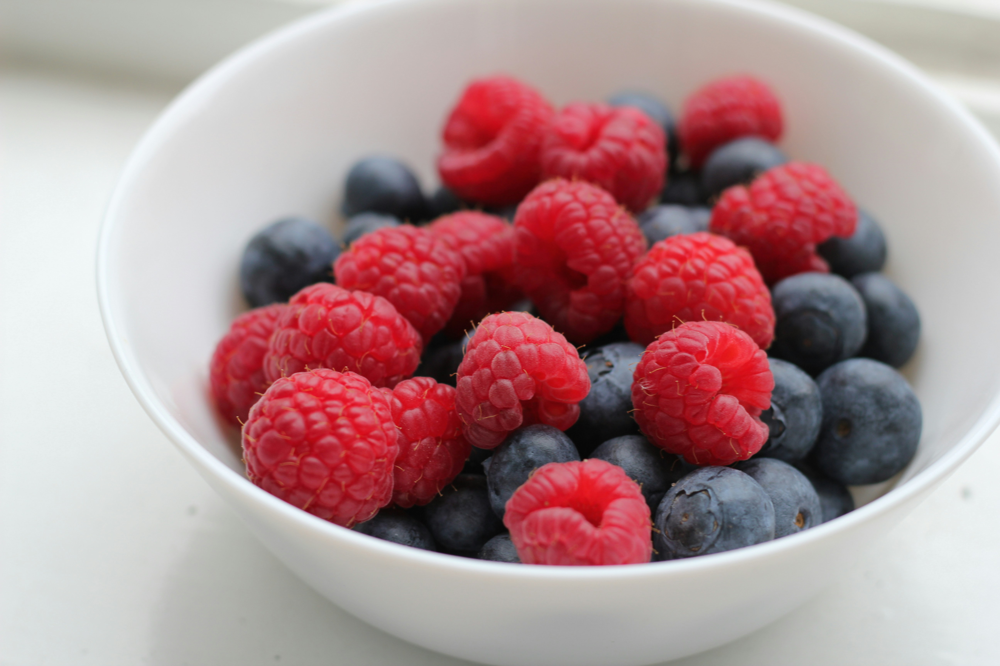

About Berries
The three most popular and well known berries are strawberries, blueberries, and raspberries. Strawberries are apart of the rose family and known as an accessory fruit. Production of strawberries are currently led by China followed by the United States. Blueberries are native to North America and grow on forest floors or near swamps and naturally occur only in eastern and north-central parts of North America. Raspberries are also apart of the rose family and another that is considered to be an accessory fruit. They are also known to be vigorous and can be locally invasive.

Berry Usage
Berries are packed with loads of antioxidants, vitamins, and fiber. They are used to lower cholesterol and support heart health. Below are just some examples of how to incorporate berries into your diet.
- Toppings
- Salads
- Jams
- Juices
- Smoothies
- Pastries
Other Berries
Botanically speaking, what makes a berry, a berry is any fruit that is developed from a single ovary from a flower and contains one or more seeds in its flesh. This means other fruits such as bananas, grapes, tomatoes, and even watermelons are technically considered berries!
Learn more about berries on Wiki